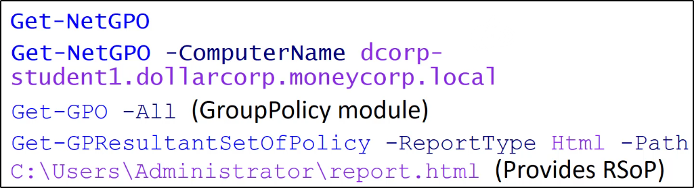
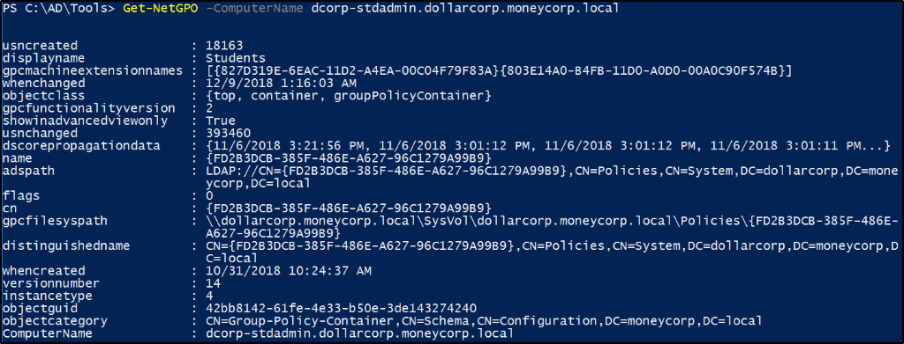

GPO (Group POlicy)
Group Policy permette di gestire configurazione e cambiamenti
in modo semplice e centralizzato in Active Directory.
Può essere sfruttato per privesc, backdoor, persistenza etc.
Permette di configurare:- Settings di sicurezza
- Settings su policy basate sul registro
- Preferenze delle policy di gruppo (scripts per avvio,shutdown, login o logout)
- Installazione di software
Ottieni tutti gli oggetti Group Policy per il dominio corrente:



Con GPRESULT and /R (RsoP Result Set of Policy option)
Puoi mostrare i settings delle Group Policy sulla macchina corrente e sugli utenti
L'opzione /V la rende verbose


Ottiene tutte le GPO le quali usano "Restricted Groups" oppure "groups.xml"
per utenti interessanti:

Questi gruppi sono aggiunti lato server:

Ottiene gli utenti dei gruppi locali di un Computer, tramite le GPO

Ottieni i Computer dove un utente appartiene ad un specifico gruppo

Ottieni tutte le Organizational Units (OUs)


Ottieni la Group Policy applicata ad un determinato Organizational Unit,
Sfrutta il parametro GPOname dall'attributo gplink del comando "Get-NetOU"